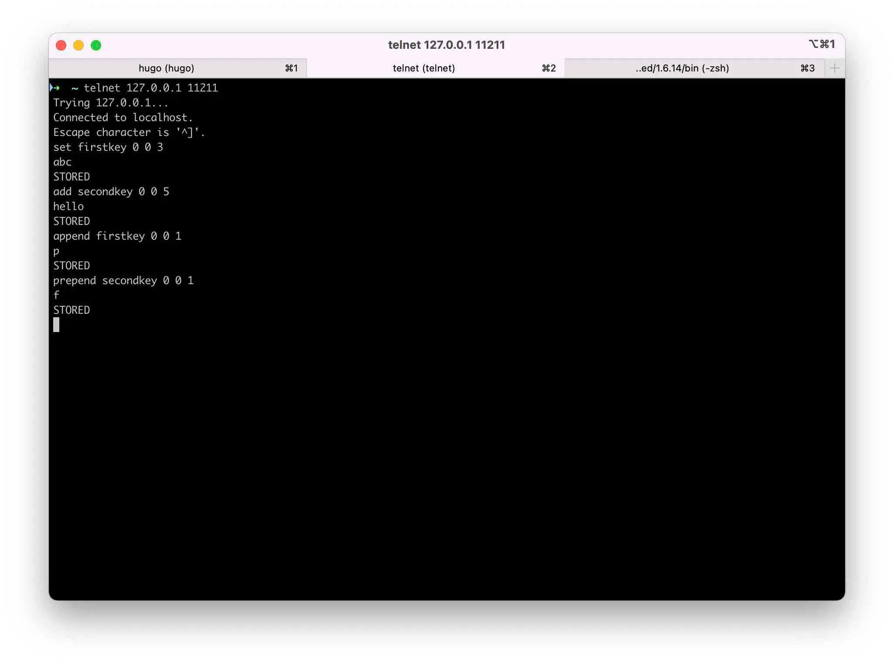
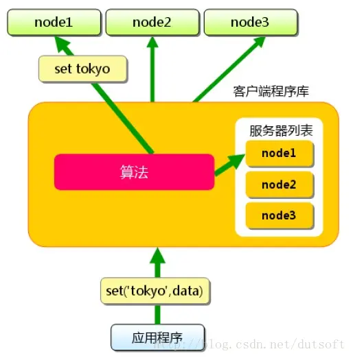
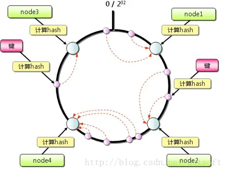
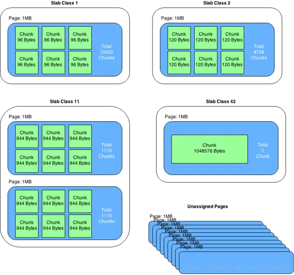

#memcached依赖libevent
brew install memcached
brew services start memcached
启动选项：
telnet localhost 11211
command <key> <flags> <expiration time> <bytes>
<value>
参数说明如下：
缓存雪崩:短时间内大量键超时失效
缓存击穿:缓存中没有键值

| 命令 | 功能 |
|---|---|
| set | 没有则新增,有则更新,相当于add+replace |
| add | 新增键值,有则不操作 |
| replace | 替换存在键值,没有则不操作 |
| append | 向存在键值后面追加数据,不存在则不操作 |
| prepend | 向存在键值前面追加数据,不存在则不操作 |
#多个key用空格隔开
command key key key
| 命令 | 功能 |
|---|---|
| get | 如果不存在,则返回空 |
| gets | 返回值增加CAS令牌 |
delete key
#decr incr
command key value
已存在的 key(键) 的数字值进行自增或自减操作
flush_all [time]
可选参数 time，用于在指定的时间后执行清理缓存操作。
static int process_request(mcp_parser_t *pr, const char *command, size_t cmdlen) {
...
case 4:
if (strncmp(cm, "gets", 4) == 0) {
cmd = CMD_GETS;
type = CMD_TYPE_GET;
token_max = 2; // don't chew through multigets.
ret = _process_request_simple(pr, 2);
} else if (strncmp(cm, "incr", 4) == 0) {
cmd = CMD_INCR;
ret = _process_request_simple(pr, 4);
} else if (strncmp(cm, "decr", 4) == 0) {
cmd = CMD_DECR;
ret = _process_request_simple(pr, 4);
} else if (strncmp(cm, "gats", 4) == 0) {
cmd = CMD_GATS;
type = CMD_TYPE_GET;
ret = _process_request_gat(pr);
} else if (strncmp(cm, "quit", 4) == 0) {
cmd = CMD_QUIT;
}
break;
case 5:
if (strncmp(cm, "touch", 5) == 0) {
cmd = CMD_TOUCH;
ret = _process_request_simple(pr, 4);
} else if (strncmp(cm, "stats", 5) == 0) {
cmd = CMD_STATS;
// Don't process a key; fetch via arguments.
_process_tokenize(pr, token_max);
} else if (strncmp(cm, "watch", 5) == 0) {
cmd = CMD_WATCH;
_process_tokenize(pr, token_max);
}
break;
case 6:
if (strncmp(cm, "delete", 6) == 0) {
cmd = CMD_DELETE;
ret = _process_request_simple(pr, 4);
} else if (strncmp(cm, "append", 6) == 0) {
cmd = CMD_APPEND;
ret = _process_request_storage(pr, token_max);
}
break;
case 7:
if (strncmp(cm, "replace", 7) == 0) {
cmd = CMD_REPLACE;
ret = _process_request_storage(pr, token_max);
} else if (strncmp(cm, "prepend", 7) == 0) {
cmd = CMD_PREPEND;
ret = _process_request_storage(pr, token_max);
} else if (strncmp(cm, "version", 7) == 0) {
cmd = CMD_VERSION;
_process_tokenize(pr, token_max);
}
break;
...
}
多个节点,依赖代码库配合实现集群 
减少扩容缩小节点影响，代码算法优化 

Slab Allocator解决了内存碎片,但由于分配的是特定长度的内存，因此浪费内存
直接用telnet,nc等工具都可以发送,\r\n表示换行,[]表示可选,会影响回包内容
#存储类命令(set,add等)
<command_name> <key> <flags> <exptime> <bytes>\r\n
#存储内容
<data_block>\r\n
#服务端回包,STORED成功,NOT_STORED失败
STORED\r\n
NOT_STORED\r\n
#删除
delete <key> [<time>] [noreply]\r\n
#服务端回包
DELETED\r\n ：表明执行成功
NOT_FOUND\r\n ：表明这个键没有找到
#自增减命令(incr,decr)
<command_name> <key> <value> [noreply]\r\n
#服务端回包
NOT_FOUND\r\n ：没有找到数据项
<value>\r\n ：数据项的新数值，自增或自减以后的值